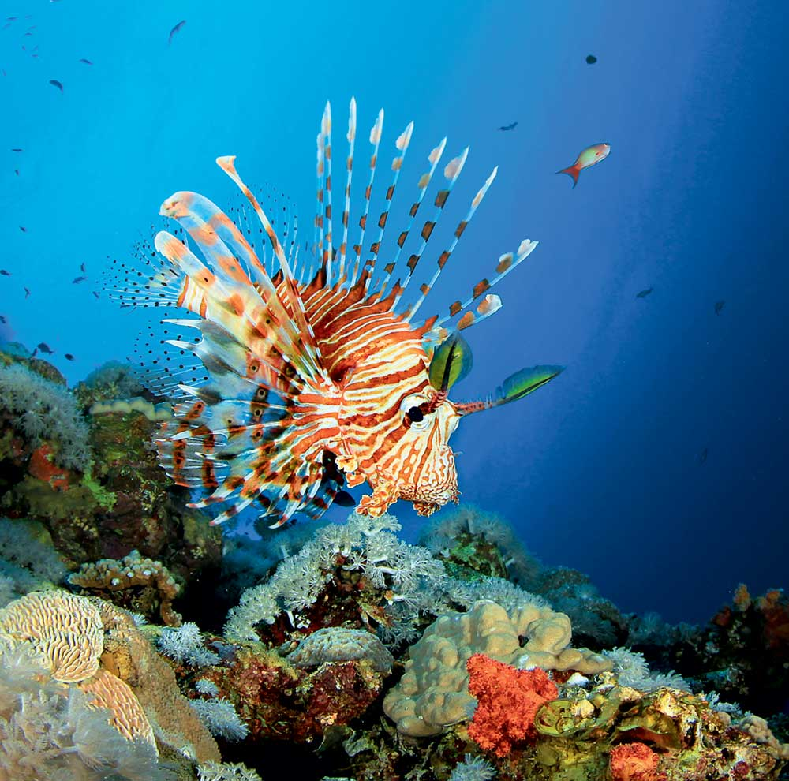

OFFICIAL STUDIO "ANDREI"
MENU
CATALOG
NEWS
CONTACTS
O.S.A. Is associated with major events and news in the world.Works with other companies and collaborates for the glory of science.
What happens to the course in the world:
 "Internal and external economic factors indicate the stability of the tenge," said the head of the department.
He assured that there was no reason for
the excitement in the cash currency market. The National Bank controls the situation at exchange offices in Kazakhstan. Terentyev recommended that citizens contact the NB branches when speculating speculative cases of overvaluation of the currency exchange rate and promised that operational decisions would be made on these appeals.
"Internal and external economic factors indicate the stability of the tenge," said the head of the department.
He assured that there was no reason for
the excitement in the cash currency market. The National Bank controls the situation at exchange offices in Kazakhstan. Terentyev recommended that citizens contact the NB branches when speculating speculative cases of overvaluation of the currency exchange rate and promised that operational decisions would be made on these appeals.
"Internal and external economic factors indicate the stability of the tenge," said the head of the department.
He assured that there was no reason for
the excitement in the cash currency market. The National Bank controls the situation at exchange offices in Kazakhstan. Terentyev recommended that citizens contact the NB branches when speculating speculative cases of overvaluation of the currency exchange rate and promised that operational decisions would be made on these appeals.
US Senator Lindsay Graham said that Turkish leader Tayyip Erdogan and US President Donald Trump discussed in a telephone conversation.
He tweeted that Erdogan had promised Trump to “stay away” from the Syrian city of Kobani.
Thus, the parties want to avoid further escalation in Syria.
NEWS ON THE TOPIC:
- It became known when Turkey will leave Syria
- Erdogan named two goals of the military operation in Syria
- EU called on Turkey to withdraw troops from Syria.
Where to go in the summer? - To Baku!
Almost the whole of Cuba is one continuous coast with beach resorts. Closer to the center of the island are more authentic Cuban cities and villages with local color and historical sights. Cuba is a fairly compact country, and you can easily go all over it in a couple of weeks.
Where to go in the winter? -Sri Lanka!
Even in two weeks in Sri Lanka you will eat plenty of lobster from your belly and cover yourself with a bronze tan. In the romantic resort of Bentota in the south-west of the island, he has a great rest in body and soul: you lie all day on the beach, you’re blushing away from the gentle sun and you think how good it is that we invented airplanes
What dangers await at sea?

Varios dangers in the sea can wait for us,and the most dangerous of them are jellyfish.They can occur suddenly and after them varios health problems form , they paralyze directly in the water and block the airways of a person, be careful!
Dangerous fish in the ocean!

Lionfish, it is a lion fish, weighs up to a kilogram. Despite the name, it can’t fly. In the beautiful fins, towering a sort of bush over the body of the fish, sharp needles. The injection causes severe pain, cramps and interruptions in the heartbeat may follow.